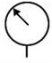

Como en cualquier otro tipo de circuíto,necel sitamos poder medir los parámetros de funcionamiento del circuíto, para comprobar que estes están dentro del rango que hemos calculado, o para conocer porque el funcionamento del circuíto no es el adecuado.
La medida básica en los tanto circuítos neumáticos, como en los hidrúlicos es la presión.El aparato que mide la presión se denomina manómetro.Los manómetros, son dispositivos cilíndricos, con una escala graduada (normalmente en bares o en psi), y una aguja que gira en función de la difrencia de presión entre una estándar y la del circuíto donde queremos medir.

Manómetro hidráulico
Manómetro Neumático
Símbolo:
En la animación puedes comprobar el funcionamiento de un manómetro Bourdon. El fluído(rosa), hace que se deforme el tubo elástico, que ha su vez mueve el mecanismo de piñones
Tanto los manómetros neumáticos como hidráulicos miden presión relativa, tambien denominada manométrica.Pulsa el botón del
, donde podras simular el funcionamiento de un manometro.